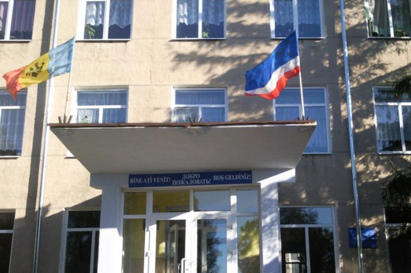

Визуализация ‒ это процесс представления данных в виде изображения с целью максимального удобства их понимания.
Процесс визуализации – это свертывание мыслительных содержаний в наглядный образ; будучи воспринятым, образ, может быть, развернут и служить опорой адекватных мыслительных и практических действий.
Ролевая игра – это активный метод, который позволяет обучаться на собственном опыте путем специально организованного и регулируемого «проживания» жизненной и профессиональной ситуации
Автор Слав С. П.